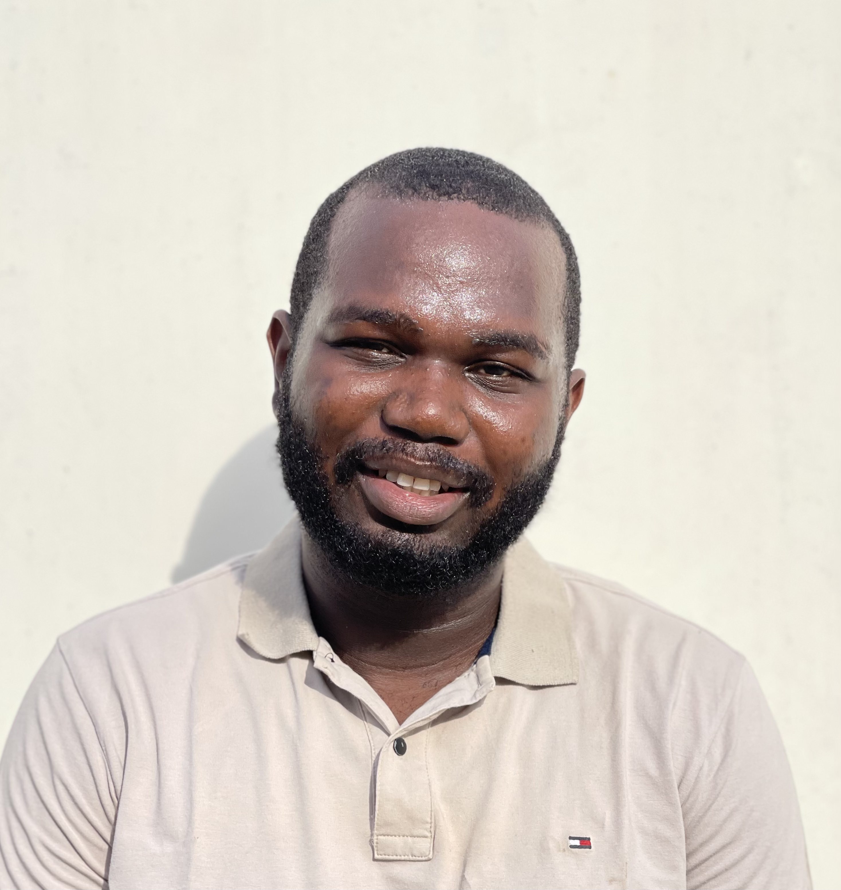

I'm Tegan Jegede, based in Abuja, Nigeria. I study how reward design affects the reliability of RL-trained agents and I build safety evaluations that run on everyday hardware.

I am completing my MSc in Computer Science at Nile University of Nigeria, building on a B.Eng. in Electrical and Electronics Engineering. My research is anchored in empirical AI safety and reinforcement learning, with a specific focus on mitigating hallucinations in multimodal systems. My thesis investigates how replacing sparse binary feedback with continuous semantic reward signaling can stabilize policy learning. I regularly run multi-seed ablation studies on models like LLaVA-1.5 to computationally penalize non-factual reasoning. This work recently resulted in a sole-author paper accepted at the ICML 2026 AgenticUQ Workshop, demonstrating how Hybrid Reward Architectures (HRA) can resolve severe, unquantifiable risks in autonomous agents. A second paper, extending this multi-seed analysis across a larger evaluation suite, is currently under review.
Professionally, my background bridges technical engineering with large-scale execution. As a Technical Trainer for a government-funded initiative, I teach foundational AI and data analysis to rural communities across Nigeria, drawing on my past experience managing digital deployments as a Remote Product Manager at ScaleInAfrica. To bridge the gap between my academic research and practical application, I actively build alignment tools. For example, to move beyond theoretical safety frameworks, I engineered a Factual Grounding Module using LangChain and an all-MiniLM-L6-v2 encoder to automatically generate continuous reward signals, directly translating abstract alignment constraints into robust, executable code.
July 2026
Core areas first, then the tools I use daily.